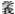

|
十四、修习苦为助伴
仅仅不贪执快乐还不够，我们还应当将痛苦视为助伴，象依靠良药一般依止痛苦。博朵瓦尊者所讲的一些寓言，给我们留下了极大的思考空间：“种敦巴尊者的出生地罗当巴，包括阿巴、耶巴以及东 瓦三地，在阿巴有一个人名叫芒赞。 瓦三地，在阿巴有一个人名叫芒赞。
“一天，他的妻子试探性地问他：‘你是愿意连续三年以粥唯生，其后永享美味。还是愿意连续三年享用美味，之后永远喝粥呢？’
“他不假思索地回答：‘我当然是选择喝粥三年了！这样我就可以积攒满满一桶无量光、启明星以及狮臂（都是名贵松耳石的名称）等各种各样的松耳石。’
“（世间的人为了长远的享乐尚且甘愿承受暂时的痛苦，）同样，我们为了修法就更应该卧薪尝胆、与苦相伴了。修行人若不接受痛苦的挑战，就不能调服自心，就会贪得无厌，永不满足。
“（世间的人也明白，）如果认为氆氇只需经过洗濯、揉搓、敲打已能滴水不漏的话，这样做出来的氆氇就不够结实。只有通过两人分别从两个方向抓住氆氇，用力将对方往自己的方向拽拉，才能做出质地精良、经久耐磨的上等氆氇。
“同样，修法之时，若没有瞻前顾后、踌躇不决，而是勇往直前，就能稳操胜券。拥有不计其数的锋矛利剑并不能称之为英雄，若能赤手空拳地战胜敌人，才是当之无愧的勇士。所以，我们应当慷慨无畏地宣言：‘别人不能做到的我必须做到！’这样让自心依于贫穷，安于贫困直至死亡，（由于自己的尸体弃置荒野、无人认领，）几天以后，饿狗就会前来舔食自己的脚，儿童就会用棍棒抽打自己的头。我们应当有这样破釜沉舟、万死不辞的雄心壮志。
“总之，若想不再流转于轮回，尤其是恶趣以及无间地狱中，就必须有敢于喝下别人不喝的洗碗残汤，穿上被人当成坐垫的破衣烂衫的勇气。”
至尊宗喀巴大师云：“世间圆满皆欺惑，唯一利者即胜法，与法相遇仅一次，故当思维彼等义。”
夏沃瓦格西的一席话可谓字字千金：“如果上午没有呆在床榻之上（厉行对治），下午内心就会被狡诈之念所占据。因此，所有的青年人在身心强壮有力、朝气蓬勃的时候，对治的力量也坚不可摧，此时若与烦恼交战，必将立于不败之地。（若此时不行对治）等到胸膛已经布满皱纹的垂暮之年，应当虚弱衰老的烦恼仍生机勃勃，不应衰老的对治反而老态龙钟、力不从心。就会做出各种有失妥当的言行举止，给他人留下的都是极坏的印象。”
世尊云：“忍者有三：安受苦忍、耐怨害忍以及谛察法忍。”在其他的经典论著中，宣讲安忍的篇幅，也可谓卷帙浩繁。前辈的上师们都勇于承受三安忍等的磨难，或者将苦难看作是促进修行的助缘而进行实修，并与前面所讲的“四依”等“十大至宝”结合起来进行修持。谛察法忍与所谓“智慧金刚助伴”，说的都是同一含义，我们应当对其进行观察抉择，并以观修的方式来修心。
云龙瓦格西闭关时，一位信士拉着他的衣服，急不可耐地祈求尊者赐予一段言教，尊者语重心长地说：“你年纪轻轻就出家，应该专注地修持一门临死不后悔的法。吃糌粑维持生存，披破衣抵挡风寒，与乡邻素不相识，持低劣之位，著褴褛衣衫。远离故乡，像服用甘饮一样地聆听善知识的教诲，即使此生遭受闲言碎语式的讥毁詈骂，即使林木断塌、山洪爆发也无动于衷，只有这样精勤修持，才能（在临死之时）不会后悔。”
博朵瓦尊者云：“他人于我生悲心，吾则恒时欢喜住，此人具法他人无。”又云“佛陀教法隐没之时，喜黑法方实力强大，喜白法方势单力薄。是故趋入非法之徒，长寿无病利惠众多，趋入正法适得其反，此本规律修士莫惧。敦巴格西如此教我，故当思维此对治法。”显而易见，于此五浊兴盛之时，想没有痛苦简直是天方夜谭。所以，我们应当坦然地面对各种厄难，而毫无怯懦之心。
萨迦班智达云：“诤时福报圆满者，百里难得挑其一，朽塘若将水注满，必有一方会毁塌。何人如若具财富，彼则难有贵种姓。子孙满堂富者鲜，彼者若具怨敌至。尔等俱皆圆满者，多数即将趋死城。”
喀瓦格西也殷切地说道：“违缘乃为善知识，障碍本是劝善者，苦难实为恶扫帚，莫视不喜为祸矣！”
《入行论》也云：“得此不乐食，嗔盛毁自他。”“遭遇任何事，莫挠欢喜心，”“若事尚可为，云何不欢喜，若已不济事，忧恼有何益？”“苦害有诸德，厌离除骄慢，悲愍生死众，羞恶乐行善。”我们如果能生起如此定解，则能将过失转为功德，将痛苦化为快乐。修法之时，无论出现何等的违缘障碍、艰难险阻都不能损害。
博朵瓦尊者云：“有的商人在下雪之时也会说：‘这样对马蹄有利。’晚上下雨的时候会自我安慰：‘这样敌人就不会来侵扰了。’同样，我们也应将疾病、贫困、诽谤，乃至梦中的痛苦都转为道用而使罪障清除，并生起诸多功德。此时，能出现违缘障碍反而成了再好不过的事情。如果能这样的话，违缘就成了我们修行的最佳良伴。”
那么，如何将痛苦转为道用呢？关于此理，正如前面所引用的《入行论》以及前辈上师们的教言中所讲的那样，不论出现何等不愿出现的事情，都应当反复思维如果闷闷不乐实在于理不容，欢欣鼓舞才是理所当然的道理，继而满心欢喜并以发心摄持。如同匝沃之女的公案那样，为众生的利益而回向，并修持自他相换等等，这就是最为关键的要诀。
当然，虽然道理是这样，但也不必矫枉过正。如果我们患了疾病，有治疗的手段，还是应该及时治疗，而不应讳疾忌医。智者们对此也是认可的，故没有什么不合理。
恰卡瓦菩萨（法名益西多杰，夏氏家族后裔，出生地为罗若，首先修习三藏，其后依止夏瓦并生起真实无伪的菩提心，夏寺位于许地，夏本巴寺位于达耶山脚，恰卡瓦菩萨创建了恰卡寺，聚集僧众九百名，七十五岁时圆寂于塔颇，具有绝伦逸群之广博功德，其大弟子色节沃创建学沃寺，囊巴达热创建了卡寺，瑜伽士香森是恰卡瓦与卓衮桑及二位的弟子，他创建了卓巴寺，主要讲闻律藏，享年七十六岁，为功德盖世之大成就者）云：“内心常与乐相伴，遇境皆与修结合，果报皆知业追讨，观修众生之深恩，此四行乃胜方便。”上师们也都这样说道：无论出现何种事与愿违的结果，都决不以分别念跟随，而是坦然安住，这就是将恶缘转为道用的殊胜方法。
藏巴加惹云：“被线疙瘩捆缚（形容极为执着）的人，就会被痛苦与贪嗔所缠绕，通晓如何令自心松弛的人，大乐就会与其长相厮守、永不分离。”嘉尔瓦羊衮巴也曾不厌其详地再三宣说此理。若能如此通达如何将恶缘转为道用，就能永不间断地恒享幸福快乐。
善知识们都异口同声地说：“苦乐皆具虚伪性，知调心否为要领，烦恼盛衰亦虚伪，对治强弱为要领。”
喀巴格西也叮咛道：“内心取舍若未晓，无论如何无乐时，通达取舍之智者，恶缘亦为助伴矣！”藏巴加惹云：“若视痛苦为良伴，即为行为之正量；若能抛弃珍爱物，即为睿智之正量；遭遇何等违缘障，如如不动稳重量。具恭敬者之门房，大恩师尊已困躺，具邪见者难察访；具信心者之门房，殊胜正法已困躺，未视苦为助伴者，难以察觉与寻访。”
基 巴云：“如果没有自心坎深处对贪念生起舍弃之心，即使行持以水维生的苦行也是枉然，终不能趋至究竟；如果没有了知轮回的痛苦，就不会萌生出离轮回的厌倦之心；如果不能晓悟内心的取舍，就会成为头脑简单、无有主见之徒，并永时不得快乐。” 巴云：“如果没有自心坎深处对贪念生起舍弃之心，即使行持以水维生的苦行也是枉然，终不能趋至究竟；如果没有了知轮回的痛苦，就不会萌生出离轮回的厌倦之心；如果不能晓悟内心的取舍，就会成为头脑简单、无有主见之徒，并永时不得快乐。”
由此我们可以推断，所谓的苦乐并非建立于物质条件的基础之上，而在于内心修养的高低。我们应当明了此理，并进而抛却一切世间的烦杂事务。
绰颇译师云：“谋求今生之高位，成事不足反添苦，战战兢兢终溃败，故当舍弃诸贪执。”宗喀巴大师云：“暇身胜过如意珠，如是得来只一次，难得易失如空电，思后应觉将世事，如同杂秕而扬弃，故应昼夜求真实。瑜伽我亦如是修，汝欲解脱如是行。”
|